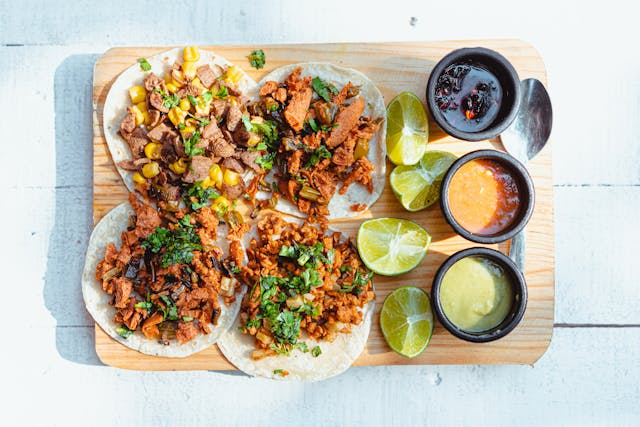
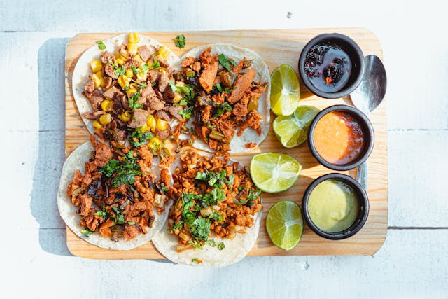
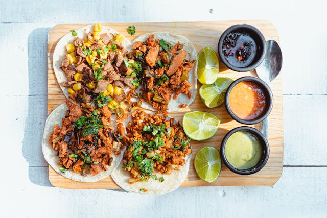

Alexandra är en passionerad systemutvecklare med fokus på att skapa smidiga och användarvänliga digitala lösningar. På Linas Matpåse arbetar hon med att utveckla och förbättra företagets hemsida, så att kunder enkelt kan beställa och få sina matkassar levererade utan problem. Med en bakgrund inom både frontend- och backend-utveckling brinner Alexandra för att kombinera teknisk precision med en hållbar framtid. Hennes arbete handlar inte bara om att skriva kod, utan om att förstå användarnas behov och skapa lösningar som gör vardagen enklare och mer hållbar.
Alexandra har varit en nyckelspelare i att implementera nya funktioner som personliga receptförslag baserade på kundernas preferenser och säsongens råvaror. Hon samarbetar nära med både designteamet och logistikavdelningen för att säkerställa att den digitala upplevelsen är lika smidig som leveransen av matkassarna. Hennes engagemang för att minska matsvinnet genom smart teknik har även lett till att Linas Matpåse har kunnat optimera sina leveranser och erbjuda kunder mer exakta portioner.
När hon inte kodar hittar du henne antingen i köket, där hon testar nya recept med säsongens råvaror, eller ute i naturen på en löptur.
html
CSS
Javascript
Antal projekt: {{numberOfProjects}}
{{project.Titel}}
{{project.Kund}}
{{project.Beskrivning}}
